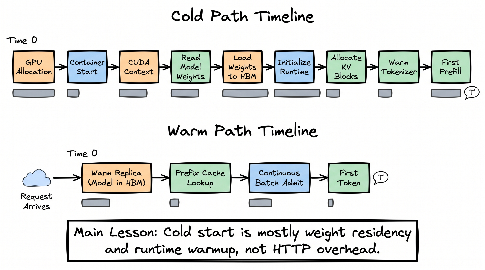
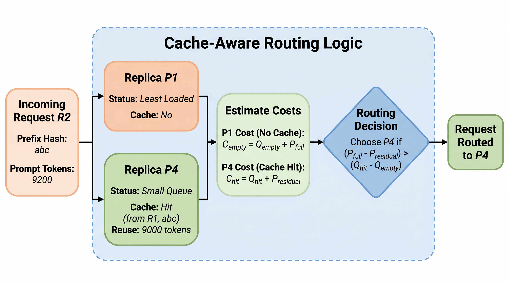

From fast kernels to a real service.
A production LLM system is not just a model server. It is a control plane around a model server: routing, warm capacity, cache locality, deployment gates, guardrails, observability, and overload behavior. This lecture shows how all previous optimizations become operational decisions.
The request lifecycle: every stage has a metric.
When a user says "the model is slow," they are compressing ten possible bottlenecks into one sentence. A production inference system decomposes latency into stages, then gives each stage an owner and a metric.
| Stage | Metric | Bad smell | Typical fix |
|---|---|---|---|
| Gateway | requests/sec, tokens/min, 429s | Free tenant causes paid-tenant P99 spike | tenant-level rate limits and priority queues |
| Router | cache hit rate, fallback rate, model mix | 70B traffic rises without product reason | difficulty classifier or cascade threshold tuning |
| Queue | queue depth, waiting time | queue grows while GPU is not saturated | scheduler config, batch token limits, bad admission policy |
| Prefill | prefill ms, prompt tokens/sec | TTFT jumps after prompt-template change | prefix caching, prompt normalization, chunked prefill |
| Decode | ITL/TPOT, output tokens/sec | stream pauses every few tokens | decode capacity, smaller batches, disaggregation |
| Output | schema validity, safety flags, repair rate | valid text but invalid tool calls | guided decoding, validators, eval gate |
Cold starts are weight residency problems.
A cold start is not mainly HTTP latency. It is the path from "no useful GPU process exists" to "model weights are resident in HBM and the engine can accept a request." The larger the model, the more the cold path is dominated by weight movement, runtime setup, and cache allocation.

PaperBanana figure: cold start versus warm path. The warm path exists because model weights and runtime state are already resident.
Cold path trace
t=0ms request arrives t=5ms router sees no warm capacity t=100ms cluster scheduler assigns GPU t=2s container ready t=8s model files opened / fetched t=18s weights copied into GPU HBM t=22s runtime initialized, CUDA graphs/kernels warmed t=23s KV block pool allocated t=24s first prefill can start
Warm path trace
t=0ms request arrives t=2ms router chooses warm replica t=4ms prefix hash lookup t=8ms admitted into continuous batch t=30ms prefill begins t=250ms first token streams
If a warm 70B replica costs $X/hour but prevents a 20-second cold start during a classroom demo, enterprise agent session, or voice call, the warm pool is not waste. It is the latency insurance premium.
| Model tier | Cold-start sensitivity | Warm strategy |
|---|---|---|
| Small 7B/8B | Moderate | Keep a small pool warm; can scale faster |
| 70B dense | High | Keep model resident; avoid scale-to-zero for interactive traffic |
| MoE/frontier | Very high | Capacity reservation, rolling warm swaps, region-aware routing |
Autoscale on tokens and queues, not CPU.
CPU utilization is often a terrible signal for LLM serving. A model server can have low CPU usage while GPU memory is full, decode is stalled, and the request queue is exploding.
Bad autoscaler
if cpu_utilization > 70%: add_replica() # actual incident: CPU = 24% GPU = 96% VRAM = 94% queue_depth = 380 P99_TTFT = 11.2s autoscaler does nothing
Better autoscaler
pressure = w1 * queue_time_p95 + w2 * active_tokens / token_capacity + w3 * vram_pressure + w4 * p99_ttft_slo_violation + w5 * decode_itl_slo_violation if pressure > threshold: add_warm_replica_or_shed_load()
Cache-aware routing beats blind load balancing.
Traditional load balancing asks which server is least loaded. LLM routing also asks which server already has useful KV state. If two requests share a long prefix, cache locality can matter more than a small queue difference.

PaperBanana figure: the router chooses the replica whose queue penalty is smaller than the saved prefill work.
Concrete routing arithmetic
Request R2: prompt = 9,200 tokens prefix_hash = abc reusable_prefix_on_P4 = 9,000 tokens Option A: least-loaded P1 queue_delay = 30 ms prefill = 9,200 tokens * 0.045 ms/token = 414 ms total_before_decode = 444 ms Option B: cache-hit P4 queue_delay = 120 ms residual_prefill = 200 tokens * 0.045 ms/token = 9 ms total_before_decode = 129 ms Decision: P4 wins by 315 ms, despite being busier.
| Signal | How router uses it | Failure mode |
|---|---|---|
| Prefix hash | Find exact KV reuse | request ids or timestamps at prompt start destroy hits |
| Semantic cache key | Skip inference for equivalent queries | wrong reuse if similarity threshold is careless |
| Prompt length | Choose prefill-heavy pools | short hard prompts can still need a strong model |
| Expected output length | Reserve decode capacity | hard to know before generation |
| Tenant tier | Apply SLO and priority | tier is not task difficulty |
Canary deployments for LLMs need quality gates.
A web canary watches error rate and latency. An LLM canary must also watch behavior: output length drift, refusal drift, schema validity, tool-call correctness, safety flag rate, cost per request, and cache hit rate.
promotion_gate(candidate): require eval_score >= baseline - tolerance require json_validity >= baseline require tool_call_success >= baseline require p99_ttft <= baseline * 1.10 require p99_itl <= baseline * 1.10 require avg_output_tokens <= baseline * 1.15 require safety_flag_rate <= baseline + guard_band require cost_per_request <= baseline * 1.15 require rollback_plan == tested
Guardrails are a pipeline, not a magic classifier.
Guardrails live before, during, and after generation. The right system uses cheap deterministic checks early, stronger model-based checks only when necessary, and structured validation at the output boundary.
Input guardrails
authtenant policyPII scanprompt injectiontool permissionrate limit
if user asks for forbidden action: reject before GPU work if tool call exceeds tenant permission: block before model generation if prompt contains high-risk content: route to stricter policy/model
Output guardrails
schema parsebusiness rulessafety classifiercitation checkrepairfallback
parse output validate schema validate tool args check policy and PII return, repair, redact, or fallback
| Guardrail | Latency cost | When to use |
|---|---|---|
| Regex / parser / enum check | microseconds to low ms | always for structured output |
| Small classifier | single-digit ms to tens of ms | policy triage, routing risk |
| LLM judge | hundreds of ms or more | sampled audit or high-risk decisions |
| Human review | minutes to days | regulated or irreversible workflows |
Batch and online inference should not fight for the same SLO.
Online traffic cares about first-token latency and smooth streaming. Batch traffic cares about throughput and cost. Mixing them without priority rules creates the worst of both worlds.
| Dimension | Online inference | Batch inference |
|---|---|---|
| User expectation | First token quickly, stream smoothly | Finish eventually, maximize throughput |
| Scheduler goal | Protect P99 TTFT and ITL | Maximize tokens/sec and GPU occupancy |
| Batching | Continuous, bounded by latency SLO | Large batches, wait until efficient |
| Failure behavior | Fallback or graceful error now | Retry, checkpoint, resume |
| Examples | chat, coding agent, voice assistant | evals, reindexing, summarization, document processing |
Incident playbooks: diagnose by metric pattern.
| Symptom | Likely cause | First action |
|---|---|---|
| TTFT P99 rises, ITL normal | prefill queue, cache miss, prompt length drift | inspect prompt tokens and prefix hit rate |
| ITL spikes, TTFT normal | decode overloaded, batch too large, memory bandwidth pressure | reduce max batch tokens or add decode capacity |
| Cost/request jumps, quality looks fine | output length drift or model-tier routing drift | compare output token distribution and model mix |
| GPU low, queue high | scheduler bug, admission limit, upstream bottleneck | inspect engine admission logs and queue policy |
| Cache hit rate collapses | prompt prefix changed, timestamps inserted, tenant isolation bug | diff prompt templates and prefix hashing |
| Schema repair rate rises | model/prompt regression or stricter schema | run structured-output eval slice |
The operational mindset
Every inference optimization from the course creates a production metric. Prefix caching creates a hit rate. Chunked prefill creates prefill queue and chunk-size metrics. Quantization creates quality gates. Batching creates queue and ITL trade-offs. Disaggregation creates KV-transfer metrics. Production engineering is the discipline of keeping those metrics in balance.